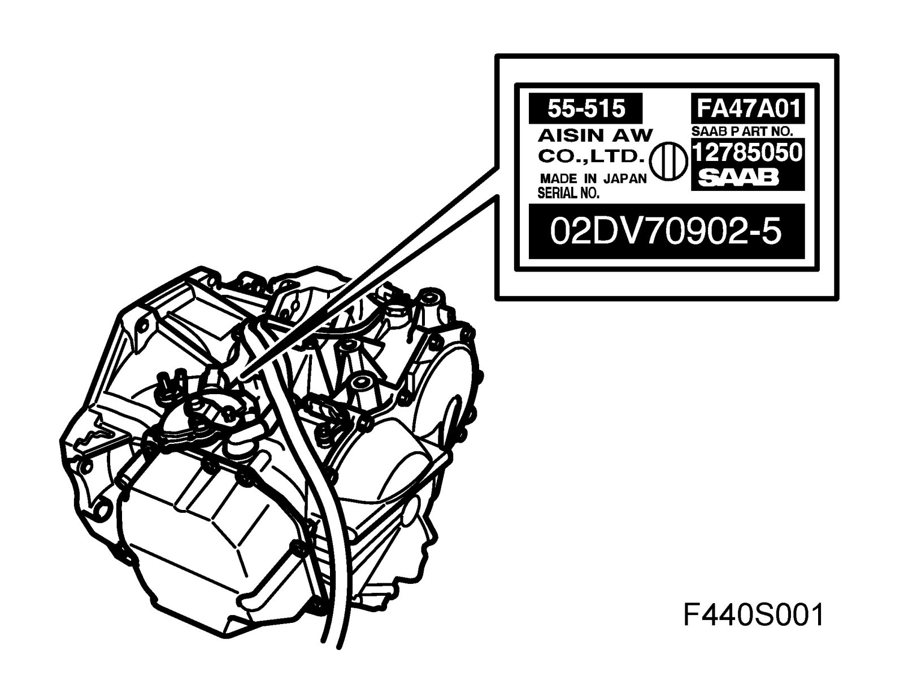
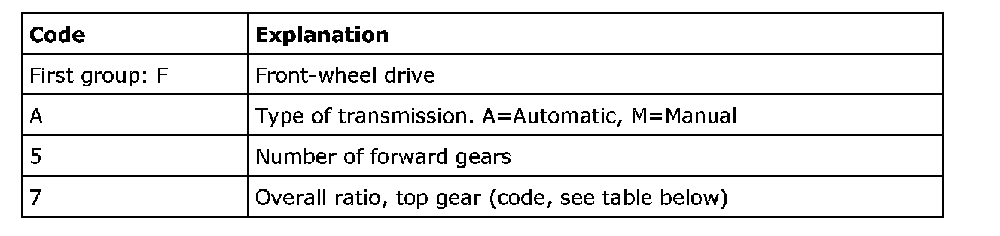
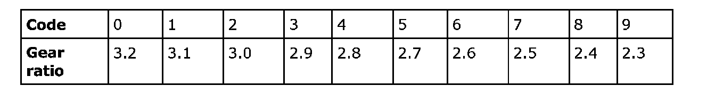
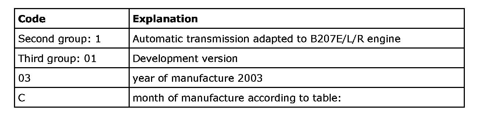
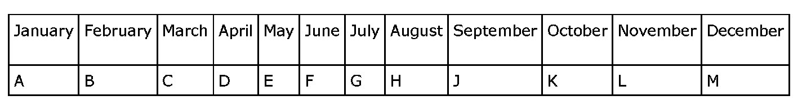
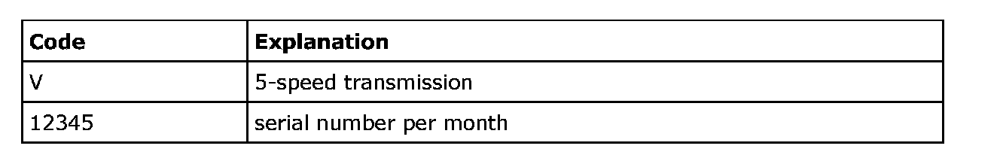
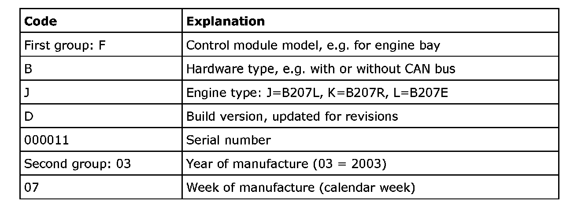

Automatic Transmission/Transaxle: Application and ID
Type designations
Gearbox
The automatic transmission in Saab 9-3 from MY 03 has the designation FA 57 (Automatic transmission front wheel drive).
The type designation of the automatic transmission is divided into 3 groups of characters as in the example: FA57 1 01 03CV12345.

Total gear ratio, top gear (code)




Control module
The type designation of the transmission control module comprises two codes with two groups of characters as in the following example: WBJD 000011 and 03 07 respectively.
